Introduction
Deep Learning, Machine Learning, and A.I.
As you begin this module, you are arriving at a turning point in computing, and probably even human history. Artificial Intelligence (AI) has suddenly become the most talked about topic on the planet. You cannot really spend a day without running into it somewhere.
But here is a slightly odd part: the technology did not suddenly appear in 2022 with ChatGPT, or even in 2012 with Alexnet. A lot of the ideas we are going to study are decades old. What changed was that, rather suddenly, they started to work really well.
We now tend to draw a very neat picture to explain how they fit:
\text{Deep Learning} \subset \text{Machine Learning} \subset \text{AI}.
It is a useful picture but it deserves a small historical warning.
I am going to use the three terms AI, Machine Learning (ML) and Deep Learning (DL) throughout this module, and in everyday conversation I will often use them almost interchangeably. That is partly because, in 2026, so much of what gets called AI is in fact built using machine learning, and in particular deep learning.
But historically, the neat nesting diagram is not quite how things happened. It is better thought of as a modern taxonomy than as a historical genealogy. The different communities did not simply emerge in this neat order and then merge together.
Artificial Intelligence became a named field in the 1950s, with a very broad ambition: make machines do things that we would describe as intelligent: reasoning, planning, language, learning, problem solving, etc. For a long time, much of the AI community concentrated on symbolic approaches: represent knowledge explicitly and write down rules for manipulating it. The machine was “intelligent” because a human had manually encoded knowledge and decision-making processes into it.
In parallel, during the 80s, 90s and 00s, a rather different collection of ideas was developing around statistics, pattern recognition, signal processing, information theory, cybernetics, and computer science. Much of this work was driven by scientific and engineering applications rather than by the traditional AI agenda of building explicitly intelligent machines. These communities laid much of the foundation of modern machine learning, a multi-disciplinary field whose state-of-the-art techniques — Random Forests, SVMs, logistic regression, and so on — were adopted across almost any application involving numerical data.
The neural-network strand, which eventually became deep learning, was even more of its own separate research ecosystem, sitting across the fields of AI and machine learning. Biologically inspired artificial neurons go back to McCulloch and Pitts in 1943; the perceptron appeared with Rosenblatt in 1958; and multilayer networks and their training were explored repeatedly over the following decades. None of this was new in 2012.
What was new was that, around 2012, deep neural networks suddenly became extremely good at solving important problems. Those breakthroughs happened largely in communities such as computer vision, image processing, speech and audio processing, and natural language processing, rather than in some single unified “AI” community.
So there is a bit of historical relabelling, politics, and marketing going on here. AI was the name of the problem space; machine learning provided an increasingly powerful way of solving those problems; deep learning turned out to be an exceptionally successful form of machine learning. Once these methods started solving the things people had been calling AI for decades, the AI label came back.
That is why the neat diagram works for teaching purposes, but now you know that the actual history is a bit messier.
What is Machine Learning?
At its heart, machine learning is the very old idea: fit a mathematical model to data.
You have probably already met the basic idea through least squares. Suppose we have measurements (x_i,y_i) and we want to fit a straight line
y = mx+b.
We choose m and b so that the line fits the observations as well as possible. Machine learning generalises this idea. Instead of just fitting a straight line, we can define much more complicated models with many parameters and use data to estimate those parameters.
In machine learning, the focus is not so much on the physical correctness of the model. The aim is to make good predictions. So instead of looking for a set of well founded rules, we are trying to learn a model, from the data, that can, in practice, capture the relationship I care about.
That shift from hand-written rules to data-driven models is one of the central ideas of this module.
And this is why machine learning is inherently interdisciplinary. The same mathematical machinery shows up in statistics, signal processing, computer vision, speech, control, optimisation, and many other fields. Depending on where you come from, you may even use a different name for roughly the same thing: statistical learning, pattern recognition, adaptive signal processing, and so on.
What is Deep Learning?
Deep learning is the subfield of machine learning concerned with artificial neural networks, particularly networks with many layers.
Again, the important thing is that deep learning is not a new invention. The underlying ideas have been around for decades. What changed in the 2010s was that the combination of large datasets, powerful computing hardware, and very effective optimisation methods made it possible to train these networks at a scale that had previously been impractical.
And once that started working, it worked everywhere.
Main Areas of Machine Learning
There is no single universally agreed way of carving machine learning into exactly four boxes. For this module, however, we will use four broad categories: supervised learning, unsupervised learning, reinforcement learning, and generative models.
Deep learning has simply revolutionised all four.
Supervised Learning
This is the workhorse of machine learning, and it is also the main type of problem we will study in the first part of this module.
The basic setup is simple. You have a dataset containing inputs and the answers you want:
\left({\bf x}_i,y_i\right)_{i=1,\ldots,n}.
For example, {\bf x}_i might be all the pixel values in an image and y_i might be a label such as cat or dog.
The task is to learn a function f which maps the input to the desired output. In a parametric model we might write
f({\bf x};{\bf w}) \approx y,
where {\bf w} contains the parameters of the model. The training problem is then to choose {\bf w} so that the predictions are good on the training data, and — much more importantly — on new data that the model has not seen before.
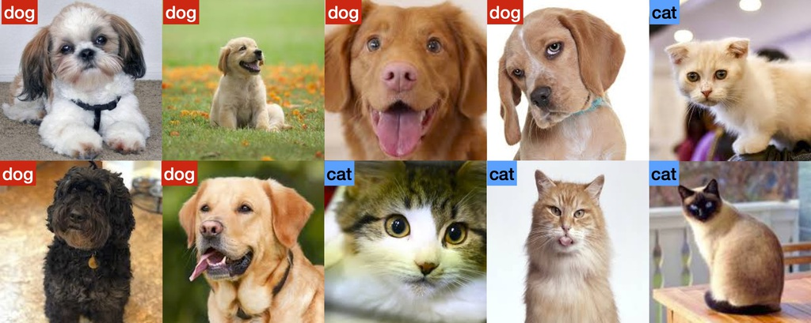
This is the basic pattern behind most of machine-learning systems: examples in, prediction out.
Unsupervised Learning
Now remove the labels. In unsupervised learning we are given a dataset:
({\bf x}_i)_{i=1,\ldots,n}
and we ask: what can we learn about its structure just by looking at the data?
One classic example is clustering: perhaps the data naturally falls into a few groups, even though nobody told us in advance what the groups should be. For example, an online retailer might discover groups of customers with similar purchasing behaviour.
The machine is no longer trying to reproduce an answer supplied by a human. It is trying to uncover structures that are already present in the data.
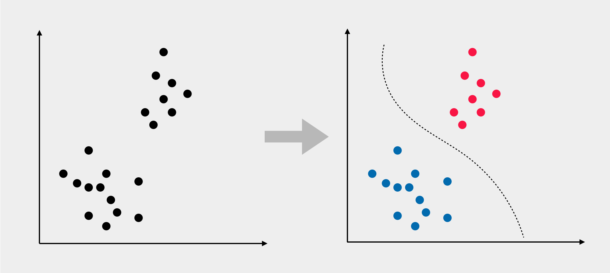
An important practical motivation is that labelling data is a costly manual effort. If you have millions of examples, getting someone to label every single one is painful, slow, and sometimes impossible. Unsupervised and self-supervised approaches therefore become extremely important when labelled data is scarce.
Reinforcement Learning
Reinforcement learning (RL) is a slightly different beast.
Instead of giving the system a large dataset of correct answers, we give it an agent, an environment, and some notion of reward. The agent takes an action, observes what happens, receives feedback, and tries to learn a strategy that maximises its cumulative reward. The machine-learning problem is to learn a policy — a strategy for choosing actions — from the agent’s experience.
This is the setting behind systems that learn to play games, control robots, or make decisions over a sequence of steps.
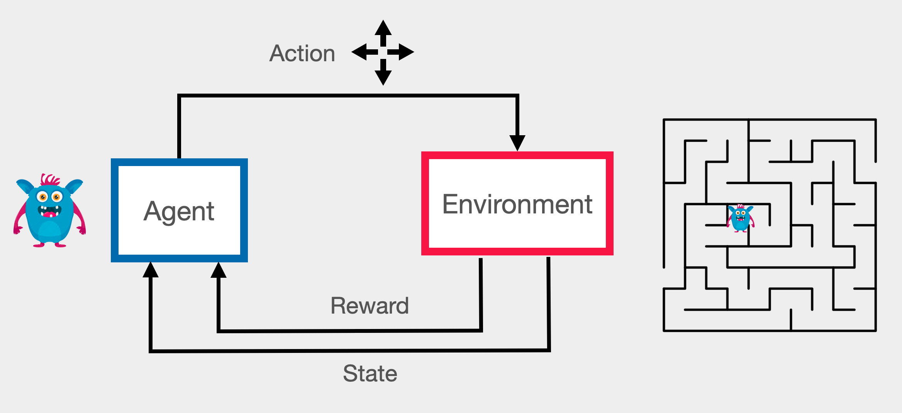
Reinforcement learning is often much harder to engineer than ordinary supervised learning. The feedback is delayed, the data is generated by the agent itself, and the process is very much sequential, not lending itself to parallelisation.
Generative Models
The fourth box is the one everyone has suddenly become very interested in.
Generative models try to learn how data is distributed so that we can then generate new samples from that distribution.
In a simplified mathematical picture, we try to model the conditional distribution
{\bf x} \sim p({\bf x}\mid y),
where y specifies what we want and {\bf x} is a possible generated observation.
For images, y might describe a scene (eg. “it’s a dog”). For text, it might be a preceding sequence of words. For audio, it might describe a sound or another signal. The basic idea is the same: learn a probability model that allows us to generate new samples.
This is the world of ChatGPT, image generators such as DALL·E and Midjourney, diffusion models, and many other generative systems.
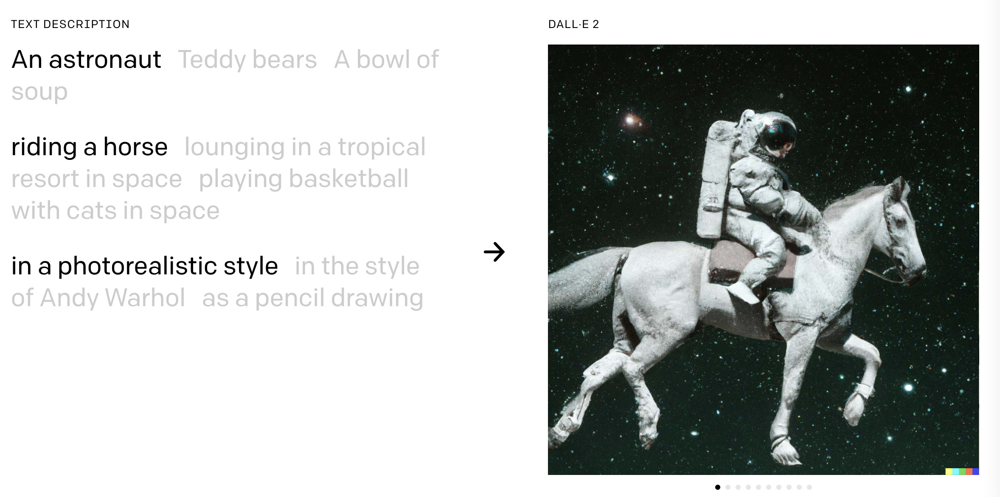
These categories overlap in practice. Modern generative models, for example, can be trained using combinations of supervised, unsupervised and reinforcement-learning ideas. The four-way split is therefore not set in stone.
A decade of breakthroughs
Now that we clarified the taxonomy, the interesting question is: why did deep learning suddenly take over? The easiest way to understand the answer is to look at what happened between 2012 and the present.
2012: Image Classification
Our story really starts in image recognition. Image recognition had been a core problem in computer vision for decades. The usual recipe was something like this: take an image, design mathematically motivated, domain-specific features, and then feed those features into a classifier such as a Support Vector Machine (SVM).
This was a very tricky problem, where a lot of engineering was required to find features that are robust to changes in viewpoint, lighting, scale, clutter, and so on.
The xkcd cartoon (2014) below captures the spirit of this perfectly:

The ImageNet Large Scale Visual Recognition Challenge (ILSVRC) gave the community a common benchmark. There were roughly one million labelled images, spread across one thousand object categories — a large dataset by the standards of the time.
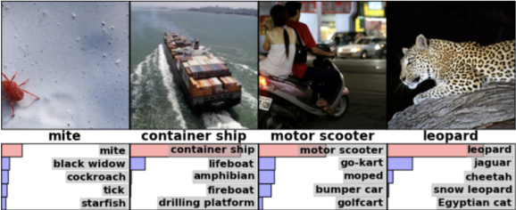
Before 2012, the best systems were making only gradual progress. Then AlexNet appeared (Krizhevsky, Sutskever, and Hinton 2012). It was not a new idea in the sense of inventing neural networks from scratch. The remarkable thing was that it could actually be trained successfully at this scale.
The result was dramatic: the error rate dropped from roughly 27–30% to about 17% in one step. That is not a tiny improvement. In practical terms, it turns a system that is mostly a research curiosity into one that suddenly starts to look useful.
That caught the attention of the wider research community and everybody piled in.
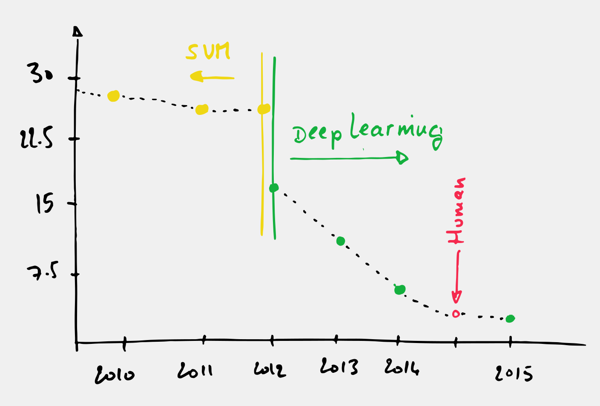
Error rates fell rapidly over the next few years. In 2014, Andrej Karpathy manually labelled a large subset of the test images and obtained an error rate of roughly 5%. By the middle of the decade, deep neural networks were already matching or exceeding that number on this benchmark.
Something fundamentally different was happening.
Scene Understanding
Very quickly the same basic machinery was adapted to nearby tasks such as object detection, semantic segmentation and scene understanding. Instead of assigning one label to an entire image, the model could predict what was happening at the level of individual pixels and objects.
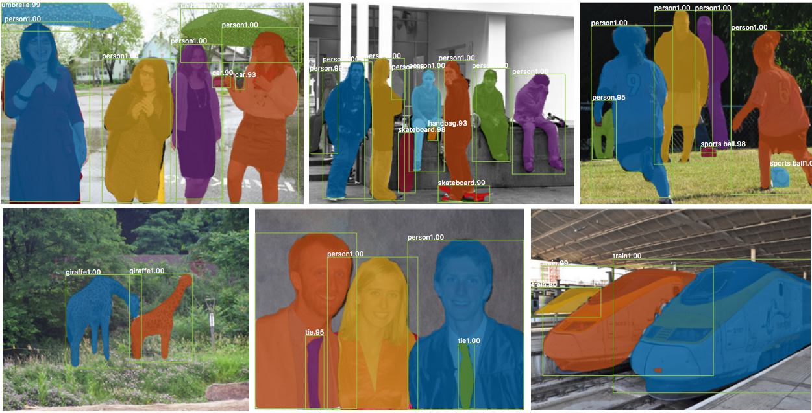
The breakthrough was not isolated. It extended to all these adjacent fields. It showed that the same recipe could often be transferred and adapted to a neighbouring problem.
Machine Translation
The same story happened in language processing.
By the middle of the 2010s, major technology companies had started moving their machine-translation systems to deep learning. A particularly striking example came from Google’s translation work: the New York Times reported that the system had historically improved by around 0.4% per year, while the first deep learning system produced an improvement of roughly 7% in one jump.
The exact numbers are less important than the scale of the change. A whole research programme that had focused on carefully improving hand-designed components could suddenly be replaced by a system trained end-to-end on data.
Read the The Great AI Awakening in the New York Times for a good account of this transition.
Image Captioning: Images Start Talking
Once we have a model that understands something about an image, and another model that can generate language, why not connect them?
Already by 2014, systems were generating natural-language descriptions of images. An image goes in; a sentence comes out. The results were nothing short of ground breaking at the time.
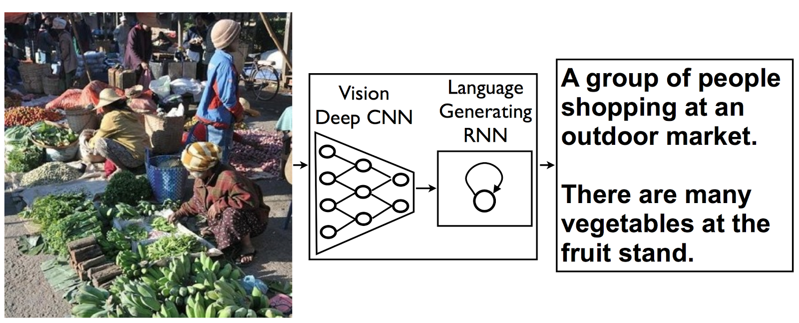
This was an early demonstration of something that has since become one of the central themes of modern AI: models for different modalities can almost be combined like lego blocks.
From Language Models to LLMs
The next major step came in 2017 from Natural Language Processing, with the introduction of the Transformer models. Transformers made it much easier to build models that could process long sequences and connect information across them.
The result was the rise of Large Language Models (LLMs): neural networks with enormous numbers of parameters trained on enormous corpora of text.
GPT-3, released in 2020, became one of the best-known early examples. What had previously looked like a specialist technology started becoming a general-purpose interface to machine learning:
- grammar correction,
- translation,
- summarisation,
- question answering,
- code generation,
- and a rather impressive amount of homework cheating.
The important transition here is that the model is no longer built for just one narrow task. We start to get a general-purpose model that can be prompted to perform many different tasks.
Multimedia and Multimodal Models
Deep learning has made it increasingly straightforward to combine information from different modalities. Image + language gives captioning and visual question answering. Speech + language gives transcription and conversational systems. Image + language + audio gives us increasingly rich multimodal systems.
In a sense, this is where the story that started with image recognition starts to look like today’s AI again: the goal is not simply to classify one kind of data, but to build systems that can connect different forms of information.
Reinforcement Learning and Game Playing
Deep learning also had a major impact on reinforcement learning.
Systems combining neural networks with reinforcement learning learned to play Atari games, control robots, and eventually defeat world-class human players at Go. AlphaGo’s victory over Lee Sedol in 2016 was a particularly memorable moment because it demonstrated that deep learning could be combined with search and sequential decision-making to tackle problems that had resisted previous approaches.
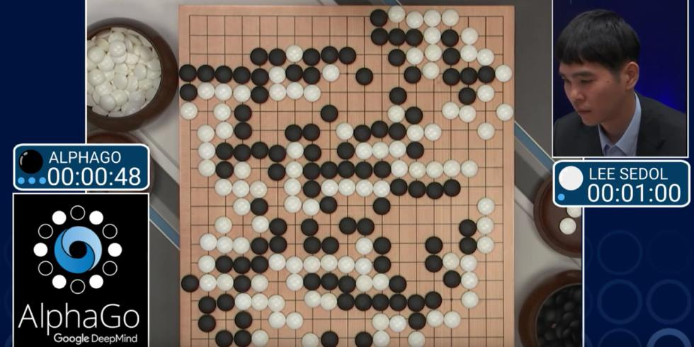
The same basic pattern keeps coming back: take a framework that learns from data, give it more data and compute, and adapt it to a new problem.
Why did Deep Learning succeed?
Neural networks had been around for decades. In fact, if you had told somebody in 2005 that neural networks would eventually dominate machine learning, they probably would not have believed you. Deep learning methods were simply not that impressive at the time.
Scale
Then things changed very quickly. The key to that change was simple:
Deep learning scales.
For many traditional machine-learning methods, performance improves quickly when you have more data and then reaches a plateau. Deep neural networks can continue to improve as you increase both the amount of training data and the amount of computation.
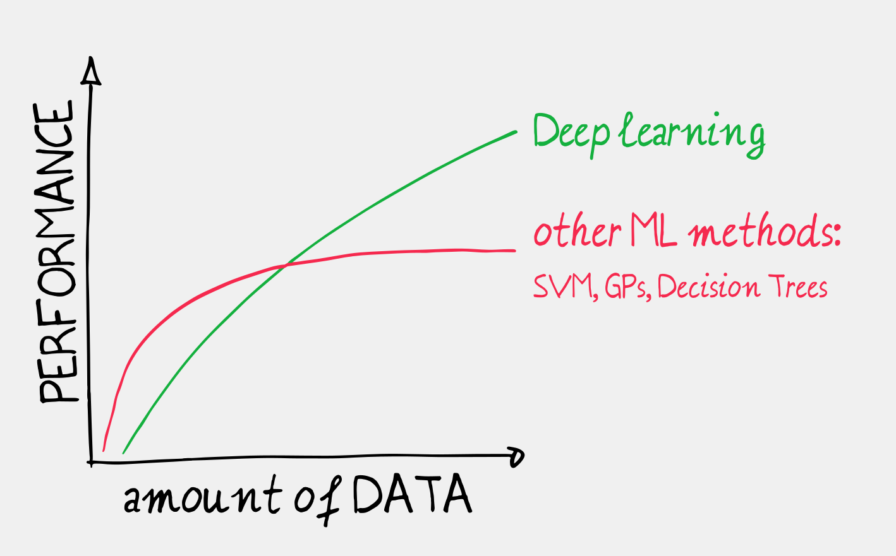
Three ingredients contributed to that perfect storm:
- Large datasets. Research datasets became much larger, with ImageNet being a famous example of the new scale.
- Cheap, powerful computation. Graphics Processing Units (GPUs), originally developed for rendering graphics, turned out to be extremely good at the kind of numerical operations used to train neural networks.
- Better training techniques and architectures. With the renewed attention, researchers quickly worked out how to train deeper networks reliably and how to build architectures suited to particular kinds of data.
Before this combination, training a very large network was mostly too difficult. Once the ingredients were available, the same basic idea could be trained on millions and eventually billions of examples.
The tipping point was around 2012 for computer vision and around 2014 for machine translation.
Universality: one recipe, many problems
What was remarkable, too, was how astonishingly reusable the framework turned out to be.
You can feed a neural network images, audio, text, sensor measurements, financial data or other numerical signals. The representation changes, the architecture changes, the loss function may change, but the basic recipe often remains surprisingly similar:
define an objective → choose a model → optimise the parameters using data.
As you will see, very different models can still be trained using remarkably similar machinery. The architecture and objective still matter, but the underlying frameworks and models are reusable across many problems. That makes deep learning less like a single algorithm and more like a general end-to-end programming framework for learning numerical functions from data.
This also explains why breakthroughs spread so quickly between fields. A trick invented for images can probably work for speech. A training strategy discovered for speech can be reused for MRI data.
Feature learning
Traditional machine learning often relied heavily on what people now refer to as handcrafted features. I do not like this expression too much, because it can make us forget the mathematical and domain-specific knowledge on which these methods were built. However, it does correctly point out that a human expert needs to decide what information to extract from the raw signal before passing it to the classifier.
Good feature engineering was often the result of a great deal of mathematical and domain-specific knowledge.
Deep networks can bypass this domain expertise and direcly learn these representations from the raw input itself.
This does not mean that feature engineering disappeared. It means that a large part of the feature-design problem became something we could learn from data.
This shift is one of the reasons the same framework can be applied to so many very different domains.
Simplicity and democratisation
It also means that people do not necessarily need to be domain experts to work on image or text processing. In fact, very early on, researchers trained in one application domain started applying deep-learning methods in completely different fields. Image researchers moved into language and audio; speech researchers moved into vision. Techniques started travelling surprisingly quickly between research communities.
Also, because the framework is relatively simple and shared across many domains, modern libraries can let you define a neural network in a handful of lines and train it with a generic optimisation loop. You no longer need to implement every mathematical detail from scratch before you can run a serious experiment.
The LLM revolution is now pushing this democratisation further. A sophisticated system can be built by describing what you want in plain English and letting an AI system generate part of the software for you. Domain expertise is not the barrier it used to be.
The impact
At this point deep learning is everywhere. It is being used in research, industry and society for applications ranging from image recognition and medical imaging to speech, recommendation systems, drug discovery, robotics, autonomous driving and protein-structure prediction. AlphaFold is a famous example of what happens when these techniques are pushed into a scientific domain.
And, naturally, this raises a few awkward questions.
What happens to jobs?
A lot of the current excitement — and anxiety — is about automation.
The interesting change is that this is no longer restricted to repetitive physical tasks. Systems can now produce text, images, software, music, and other forms of content that used to require substantial amounts of human expertise.
Even creative professions are therefore part of the conversation.
Already in 2015, neural style-transfer methods demonstrated that a network could do art:
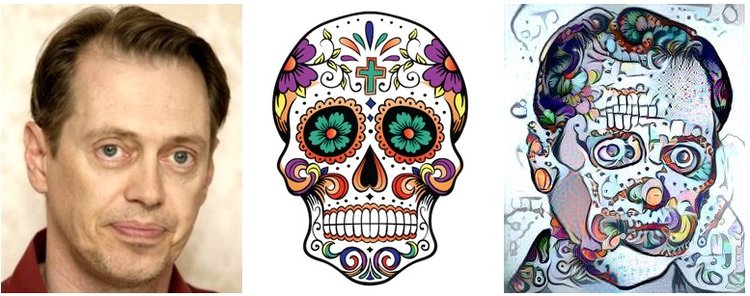
And large generative models such as DALL·E 2 pushed the bar much further, showing that AI could produce images that, for some creative tasks, were difficult to distinguish from human-produced work:
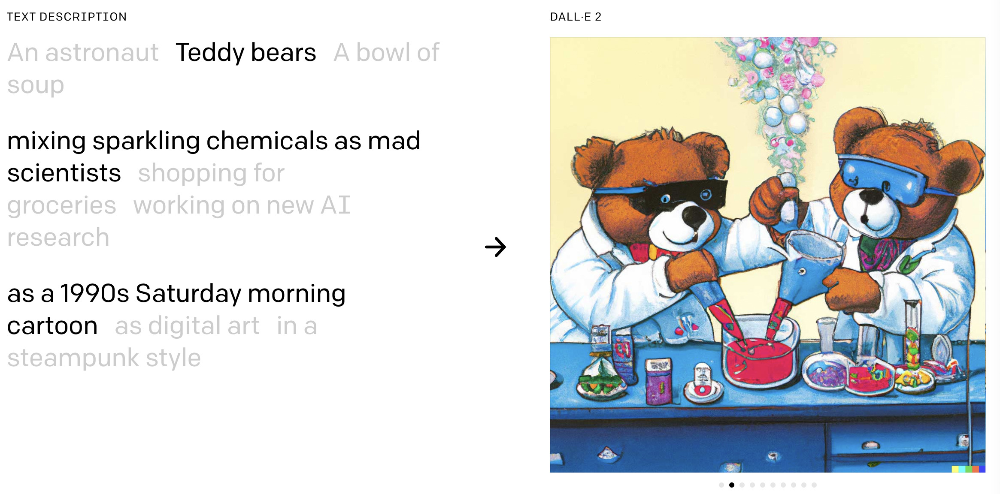
So the question is no longer simply “can AI do this task?”. In many cases the answer is already yes, at least sometimes. The harder questions are: how well, at what cost, and what happens to the people whose work changes as a result? We do not yet know the answers to those questions.
The energy problem
Large-scale AI requires large-scale computing infrastructure. Training and running models means building data centres, supplying them with electricity, cooling the hardware, connecting the machines with very fast networks, and manufacturing the hardware in the first place.
So AI is not weightless software living somewhere in “the cloud”. There is a rather large physical machine behind the cloud.
In Ireland, data centres now account for around 25% of electricity consumption. This has become a visible part of the national conversation. But this is not an isolated Irish problem. It is a global one.
At some level, this is not even an engineering problem anymore. It is simply a problem of physics. Demand for computation is growing exponentially, while the physical infrastructure required to generate and deliver the necessary energy, build data centres, cool the hardware, and manufacture the chips can only grow linearly.
Simply put: the current growth of AI compute is physically unsustainable.
It also connects directly to something we will encounter throughout this module: efficiency matters. If you can make a model smaller, faster or cheaper, that is not just a minor advantage. At scale, it can make a very big difference.
Is the AI revolution going to continue?
One thing I have learned from following this field for the last ten years is that AI discussions tend to arrive in waves. One year the story is that AGI is just around the corner. The next year it is that language models have hit a plateau. Then the story changes again.
The lecture slides for this module deliberately show this changing news cycle: you can find headlines announcing that the AI hype is ending, followed by headlines a year later asking whether an AI bubble is about to burst. The field is moving faster than our narratives about it.
There are real limitations. Current models can be unreliable, can fail in ways that are hard to anticipate, chatbots can be frustrating to work with and can struggle when pushed outside the regimes in which they have been trained and evaluated.
There are also serious questions about what we even mean when we say a system “understands” something, or whether impressive language behaviour should count as intelligence. These are fascinating questions, but they are not questions we can settle easily.
And no, machines have not suddenly become self-aware … yet.
Where are we now in 2026?
Two developments in particular have become increasingly visible over the last couple of years or so: agentic AI and context engineering.
Agentic AI
An ordinary language model produces text. That is already useful, but it is still a fairly passive interface.
Now wrap a language model in a small software system that can execute commands, call tools, inspect files, browse information, run programs, and feed the results back into the model.
A model might reason for your MSc thesis:
“I need this dataset. I should download it, inspect it, write the code, run the experiment, look at the result, try again, and now write a report.”
The model has not necessarily become a fundamentally different kind of intelligence. The surrounding software workflow has changed.
Context engineering
A second development is the realisation that what you give LLMs matters an enormous amount.
So people increasingly design systems around the model: deciding what information to retrieve, what examples to provide, what instructions to include, what previous interactions matter, and how to structure the information so the model can make use of it.
This is often called context engineering.
And the stack gets increasingly meta: an LLM can write a prompt for another LLM, which controls an agent, which calls another tool, which feeds information back to the first model. Turtles all the way down.
The important point is that these developments do not necessarily require a new kind of neural network. Much of the progress comes from better software around the models and better ways of using them. We are still in the catching-up phase, trying to figure out how best to use these new tools.
What are we going to learn in this module?
The module is deliberately structured from the ground up.
Part I — Machine Learning Fundamentals
In the first four weeks we will cover:
Least Squares — the root of a lot of machine learning. We will use it to introduce feature mappings, over- and under-fitting, regularisation, and maximum likelihood.
Logistic Regression — your first neuron. We will use it to introduce linear classification, cross-entropy and gradient-based optimisation.
Classic Classifiers — including Support Vector Machines, decision trees, kernel methods and nearest neighbours.
Comparing Classifiers — because a classifier is only useful if you know how to measure what it is doing. We will look at confusion matrices, ROC curves and F1 scores.
The point of this first section is not to make you an expert in classical machine learning. It is to give you the mathematical and conceptual building blocks that make the later neural-network material much easier to understand.
Part II — Neural Network Fundamentals
Then we start building the machinery that has driven the modern deep-learning revolution:
Feedforward Neural Networks — architecture, back-propagation, regularisation and vanishing gradients.
Convolutional Neural Networks — convolution, pooling, visualisation and transfer of learned representations.
Generative Models — including unsupervised learning, Variational Autoencoders and GANs.
Recurrent Neural Networks — LSTMs, word embeddings and sequence processing.
Transformers and Large Language Models — text processing and multimodal fusion.
In summary
So, where does that leave us?
Deep learning is not a mysterious technology that suddenly appeared out of nowhere. Neural networks are old. Machine learning is old. Statistical modelling is old. The remarkable thing is what happened when data, computation, architectures and optimisation finally scaled together.
That produced the sequence of breakthroughs we have just seen: image recognition, scene understanding, captioning, translation, reinforcement learning, Transformers, large language models and increasingly multimodal systems.
And that, in turn, produced today’s much broader AI ecosystem.
In this module, you will get deep in the fundamentals that underpin modern AI, and hopefully, by the end of it, new architectures and challenges will no longer look quite so mysterious.
That is what we are going to spend the next few months doing.
And yes: there will be a lot of data. You will be crunching numbers into GPUs, staring at loss curves, wondering if the model is overfitting, changing one line of code, and running it again.
Welcome to deep learning.